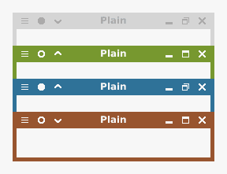

A flat theme for XFWM that doesn't break Fitts' law (there is no gap between maximized window buttons and screen edges) and has no hard-coded colors (a script is now included that lets you define them, though).
Plain.tar.gz (v. 1.4)